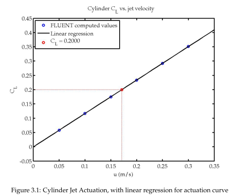
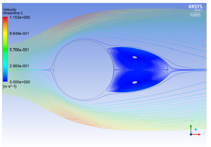
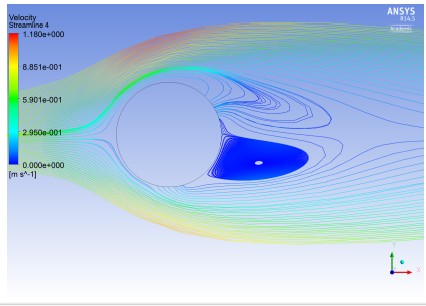

Design of a NOTAR helicopter tail
Teammates:
Ben Sands, Wenyu Zhou
Professor:
Olivier Desjardins
Summary
For the final project of MAE 5230: Intermediate Fluid Dynamics, we had an interesting and fun project presented: design a NOTAR aircraft tail using tools from the semester. Based on prior experience working with novel airfoils, it was a welcome opportunity to dive deep in FLUENT to solve a real world design challenge.
From the Abstract: “No tail rotor aircraft (NOTAR), first developed by McDonnell Douglas can be implemented in a couple of different manners. Our design objective was to generate a normalized force coefficient (CL) 0.2 with a neutral, unactuated tail shape using a combination of varied tail geometry and jet actuation. The actuation could then reduce or increase the CL dependent on jet velocity by pilot interaction. The jets themselves cause or mitigate boundary layer separation at specific locations along the cross sectional wall of the tail rotor, which in turn result in increased lift or reduced lift while attempting to minimize the amount of parasitic drag. We derived a tail rotor from ample iteration that maintained an unactuated normalized side force of 0.2 with the ability to actuate this force between a of CL 0 and 0.4 using the air jets.”
Photos
 Fig. 1: Relation of the coefficient of lift (C_L) to free stream velocity, generated from the camber data and simulated air flow
 Fig. 2: NOTAR helicopter camber projection, no lift
 Fig. 3: NOTAR helicopter camber projection, lift